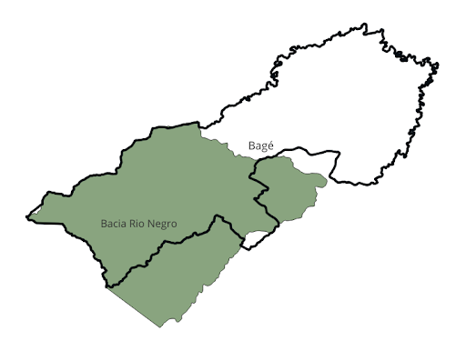

6. ANÁLISE E RELACIONAMENTOS ESPACIAIS: INTERAÇÕES ENTRE OBJETOS#
Relacionamentos espaciais são fundamentais para descrever a interação entre diferentes formas geométricas no espaço. Essas relações são importantes tanto para a análise espacial quanto para a realização de consultas em bancos de dados espaciais. A extensão PostGIS, em particular, oferece uma rica coleção de funções projetadas para explorar e manipular dados espaciais ao considerar esses relacionamentos.
No PostGIS, diversas funções permitem aos usuários não apenas consultar, mas também interpretar a maneira como as geometrias se relacionam. Entre essas funções, destacam-se: ST_Equals, que verifica se duas geometrias são exatamente iguais em termos de localização e forma; ST_Intersects, que determina se duas geometrias se sobrepõem em qualquer ponto; ST_Disjoint, que confirma se não há interseção entre as geometrias; ST_Crosses, que identifica se as geometrias se cruzam em um ponto; e ST_Overlaps, que avalia se uma parte de uma geometria é similar a outra.
Além dessas, temos a ST_Touches, que verifica se as geometrias se encontram apenas nas bordas; ST_Within, que determina se uma geometria está contida inteiramente dentro de outra; ST_Contains, que é o inverso de ST_Within e verifica se uma geometria envolve completamente a outra; e ST_Distance, que mede a distância mínima entre as geometrias.
Estudar e aplicar essas funções no contexto de dados geoespaciais não só amplia as possibilidades de análise como também enriquece o entendimento sobre como diferentes entidades geográficas se inter-relacionam no mundo real.
Estrutura do Capítulo
a. Introdução aos Relacionamentos Espaciais
Conceituação sobre interações espaciais entre geometrias e importância dessas relações para análise espacial e consultas em bancos de dados geoespaciais. Apresentação das funções PostGIS utilizadas para explorar essas relações.
b. A função ST_Equals
Explicação sobre a função ST_Equals, que verifica se duas geometrias ocupam exatamente o mesmo espaço. Exemplos práticos de aplicação no pgAdmin4 e no QGIS, com a criação de visões materializadas para análise da igualdade espacial entre municípios.
c. A função ST_Intersects
Definição e aplicação da função ST_Intersects para verificar se duas geometrias possuem pelo menos um ponto em comum. Exemplos com rodovias e municípios no Brasil, explorando consultas SQL otimizadas e visualização no QGIS.
d. A função ST_Disjoint
Apresentação da função ST_Disjoint, que verifica se duas geometrias são completamente separadas. Aplicação em municípios brasileiros para análise de adjacência e relações espaciais.
e. A função ST_Crosses
Explicação sobre a função ST_Crosses, que determina se duas geometrias de dimensões diferentes se cruzam. Exemplos práticos envolvendo rodovias e municípios, utilizando consultas SQL e visualização no QGIS.
f. A função ST_Overlaps
Introdução à função ST_Overlaps, que verifica se duas geometrias compartilham parte da área, mas não se contêm completamente. Exemplos de aplicação com bacias hidrográficas e municípios brasileiros.
g. A função ST_Touches
Explicação sobre a função ST_Touches, que identifica se duas geometrias compartilham uma borda sem sobreposição interna. Exemplos de aplicação com municípios adjacentes no Brasil.
h. As funções ST_Within e ST_Contains
Comparação entre as funções ST_Within e ST_Contains, que verificam relações de inclusão espacial. Aplicação prática para verificar a relação entre pontos e polígonos, municípios e estados, e municípios e regiões geográficas no Brasil.
Pré-requisitos:
Para realizar as atividades deste capítulo, é necessário:
Ter o PostgreSQL, PostGIS, PgAdmin4 e QGIS instalados no computador (ou instalá-los).
Baixar os arquivos shapefile do capítulo 6 disponíveis em:
Arquivos Shapefile - Capítulo 6Acessar o código SQL do capítulo 6 disponível em:
Código SQL - Capítulo 5
Vídeos Complementares do Capítulo 6
Os vídeos a seguir foram preparados para reforçar e complementar os conceitos abordados no Capítulo 6. Eles apresentam, de forma prática e objetiva, a aplicação dos procedimentos descritos ao longo do capítulo.
Acesse os vídeos:
Aproveite este material complementar para consolidar seu aprendizado e desenvolver uma abordagem mais prática no uso de bancos de dados espaciais.
6.1 A função ST_Equals#
A função ST_Equals é empregada no PostGIS para verificar se duas geometrias são espacialmente idênticas, isto é, se compartilham o mesmo espaço geográfico. Esta forma de igualdade foca na localização, forma, tamanho e orientação das geometrias, e não se baseia na igualdade dos bytes ou da representação textual das geometrias.
É importante destacar que a igualdade espacial avaliada por ST_Equals não é afetada pela ordem ou pelo ponto inicial dos pontos nas geometrias. Por exemplo, dois polígonos podem ser considerados iguais mesmo se tiverem pontos de início diferentes ou sequências de pontos distintas, contanto que ocupem exatamente o mesmo espaço.
Além disso, ST_Equals é uma função topologicamente sensível. Isso significa que ela considera a posição relativa dos pontos no espaço, e não apenas a ordem ou organização desses pontos. Este aspecto faz de ST_Equals uma ferramenta aplicável para análises que requerem uma avaliação precisa da congruência espacial entre duas geometrias, sem ser influenciada por variações na forma como essas geometrias são expressas ou armazenadas.
Vamos aum exemplo de aplicação da função ST_Equals. Abra o pgAdmin4 e habilite o banco de dados bdespacial, que criamos nos capítulos anteriores. Inicialmente, vamos criar duas visões para o município de São Paulo, com o intuito de compará-las. Poderíamos fazer essa comparação extraindo a geometria do município diretamente da tabela censo_mun. No entanto, para deixar as consultas mais simples, optamos por criar visões ou visões materializadas. Faremos isso ao longo de toda esta seção de nosso livro-texto.
Acesse o QGIS e ative a conexão com o banco de dados, que foi criada no capítulo 5 de nosso livro-texto.
Baixe o arquivo com os códigos do capítulo 6 de nosso livro-texto, disponível em (link). Volte para o pgAdmin4, acesse a Query Tool e abra o arquivo com os códigos do capítulo 6, que está disponível em (link). Você pode optar por não abrir esse arquivo e digitar os códigos a medida em que acompanha o desenvolvimento dos exercícios.
Essas consultas SQL criam materialized views chamadas sao_paulo e sao_paulo2no sistema de gerenciamento de banco de dados. Vamos detalhar o que essas consultas fazem e como elas funcionam:
CREATE MATERIALIZED VIEW sao_paulo: Este comando cria uma visão materializada com o nomesao_paulo. Uma visão materializada é um objeto de banco de dados que contém os resultados de uma consulta SQL. Diferentemente de uma view comum, que recalcula os dados cada vez que é acessada, uma visão materializada armazena fisicamente os dados no banco de dados. Isso permite consultas muito mais rápidas, pois os dados já estão calculados e armazenados, o que é útil para conjuntos de dados grandes ou consultas complexas que seriam custosas para serem executadas repetidamente.SELECT *: Este comando seleciona todas as colunas da tabelacenso_mun. Isso significa que a visão materializadasao_pauloincluirá todas as colunas e dados da tabela original que correspondem ao critério especificado noWHERE.WHERE nome_mun = 'São Paulo': Este filtro especifica que apenas os registros onde o camponome_mun(nome do município) é igual a ‘São Paulo’ devem ser incluídos na visão materializada. Isso restringe os dados na visão materializada a apenas aqueles pertencentes ao município de São Paulo.FROM censo_mun: A tabelacenso_muné a fonte dos dados. Esta tabela contém os dados sobre os municípios.
Após a criação das visões, acesse o QGIS, adicione as camadas referentes às visões sao_paulo e sao_paulo2 e as visualize.
Em seguida, retorne para o pgAdmin4 e aplique a consulta a seguir.
Como era de se esperar, a consulta retornou true, confirmando que as duas geometrias são iguais.
Vamos detalhar os componentes da consulta:
ST_Equals(a.geom, b.geom): Esta função verifica se duas geometrias são “espacialmente iguais”, ou seja, se ocupam exatamente o mesmo espaço no sistema de coordenadas utilizado. Ela retornaTRUEse as geometrias são idênticas em termos de localização e forma, eFALSEcaso contrário.AS geometrias_iguais: O resultado da funçãoST_Equalsé nomeado comogeometrias_iguais. Este nome atribuido à coluna facilita a interpretação dos resultados, indicando claramente se as geometrias comparadas são iguais ou não.FROM sao_paulo a, sao_paulo_2 b: A consulta realiza um join implícito (cross join) entre as duas visões materializadas criadas anteriormente, utilizando os aliasesaebrespectivamente. Este join combina a única linha da viewsao_paulocom a única linha da viewsao_paulo_2, comparando as suas geometrias.
Obs.: Em bancos de dados, “aliases” são nomes alternativos temporários (ou apelidos) que são atribuídos a tabelas ou colunas em uma consulta SQL. Eles são usados principalmente para simplificar a consulta, especialmente quando trabalhamos com tabelas ou colunas que têm nomes longos ou complexos, ou quando a mesma tabela é utilizada múltiplas vezes dentro da mesma consulta. Os aliases ajudam a tornar o código mais legível e conciso, além de facilitar a referência a elementos específicos durante operações como joins, ordenações, e filtros. No exemplo dado, a e b são aliases que representam duas visões materializadas, permitindo que sejam manipuladas mais facilmente na consulta SQL.
Vamos aplicar outra consulta, verificando a igualdade entre os municípios de São Paulo e Belo Horizonte. Inicialmente, crie uma visão materializada para o município de Belo Horizonte.
Utilize a consulta abaixo para verificar a igualdade entre Belo Horizonte e São Paulo.
Como era de se esperar, a consulta retornou false, confirmando que as duas geometrias são diferentes.
6.2 Funções ST_Intersects#
ST_Intersects é uma das funções espaciais mais usadas no PostGIS. Essa função determina se duas geometrias têm pelo menos um ponto em comum, ou seja, se elas possuem alguma interseção. A função retorna true se a intersecção das geometrias produzir um resultado diferente de uma geometria vazia, indicando que elas se sobrepõem espacialmente de alguma maneira. Isso inclui não apenas casos em que uma parte de uma geometria passa fisicamente através de outra, mas também quando uma geometria está completamente dentro de outra. A figura abaixo apresenta possibilidades de interseção entre geometrias.
Tipos de interseção entre geometrias no PostGIS. Fonte: Postgis.net, 2024.
A grande vantagem de ST_Intersects é que ela pode ser utilizada em conjunto com índices espaciais. Isso significa que consultas que usam ST_Intersects podem ser rápidas, mesmo em bases de dados grandes, porque o PostGIS pode eliminar rapidamente candidatos que não têm possibilidade de interseção antes de realizar cálculos mais intensivos.
Vamos aplicar o ST_Intersects para verificar se há interseção entre um trecho da BR-153 e alguns municípios da região sul do Brasil.
Inicie o processo baixando o arquivo shapefile denominado br153_sul a partir do link fornecido no início do capítulo.
Após realizar o download, abra o arquivo shapefile no QGIS para visualizar os dados. Em seguida, importe o shapefile para o PostgreSQL, especificamente no banco de dados bdespacial.
Utilize o pgAdmin4 para acessar e atualizar o banco de dados bdespacial. Confira se a tabela br153_sul foi corretamente importada e se está disponível no banco de dados.
Crie uma visão materializada para armazenar apenas os dados referentes ao município de Bagé-RS.
Visualize o município e o trecho da BR-153 no QGIS.
Aplique a consulta abaixo para verificar a BR-153 intersecciona o município de Bagé.
A consulta retornou true, indicando que a BR-153 intersecciona Bagé. Vamos detalhar os componentes dessa consulta:
ST_Intersects(a.geom, b.geom): Esta função verifica se as duas geometrias especificadas têm algum ponto em comum. No contexto de análise geoespacial, ela retornaTRUEse há interseção (ou seja, qualquer forma de sobreposição, contato ou cruzamento) entre as duas geometrias eFALSEcaso contrário.AS intersecciona: O resultado da funçãoST_Intersectsé nomeado comointersecciona, simplificando a interpretação do resultado, indicando se há ou não uma interseção entre as geometrias analisadas.FROM bage a, br153_sul b: A consulta faz uso de um cross join implícito entre as tabelasbageebr153_sul.aebsão aliases parabageebr153_sul, respectivamente. O uso de aliases facilita a referência às tabelas dentro da consulta.
Vamos a outro exemplo. Como podemos verificar na figura abaixo, São Paulo e Guarulhos são contíguas e, consequentemente, têm bordas adjacentes; vamos aplicar ST_Intersects para verificar o resultado.

Inicialmente, vamos criar uma visão materializada para armazenar os dados referentes ao município de Guarulhos.
Já havíamos criado a visão referente ao município de São Paulo. Vamos aplicar a consulta para verificar a intersecção.
A consulta retornou true, pois o PostGIS considera as linhas de borda entre as duas geometrias como uma intersecção.
Como vimos, a função ST_Intersects é usada para determinar se duas geometrias compartilham qualquer espaço em comum. Isso inclui, mas não se limita a, sobreposições diretas de áreas internas, compartilhamento bordas (linhas) e até mesmo o toque em um único ponto. No caso de municípios contíguos como São Paulo e Guarulhos, que compartilham uma fronteira, ST_Intersects retornou TRUE porque as fronteiras dos municípios se tocam. A função ST_Intersection também é relevante para entender completamente como as interações espaciais são analisadas. ST_Intersection produz uma nova geometria que representa a área compartilhada ou o espaço comum entre duas geometrias. Para ilustrar as diferenças entre as funções ST_Intersects e ST_Intersection, aplicaremos ambas em um exemplo prático. Nosso objetivo é identificar todos os municípios localizados a até 10 km de distância do município de São Paulo. Utilizaremos essas funções para determinar quais municípios interseccionam a geometria criada a partir de uma operação de buffer de 10 km aplicado a geometria do município de São Paulo.
Inicialmente, criamos um uma geometria originada por uma operação de buffer de 10km, na geometria do município de São Paulo (que está armazenada na visão sao_paulo criada anteriormente).
Na consulta acima:
ST_Transform(geom, 31983): Esta função é utilizada para transformar a geometria original (geom) do município de São Paulo de seu sistema de coordenadas original para o sistema de coordenadas com o código EPSG 31983. Este código EPSG é adequado para cálculos de distâncias e áreas porque preserva as proporções espaciais de maneira mais eficaz do que as projeções globais.ST_Buffer(..., 10000): Após a transformação da geometria para o sistema EPSG 31983, a funçãoST_Bufferé aplicada para criar um buffer de 10.000 metros (ou 10 km) ao redor da geometria transformada. Este buffer serve para definir uma área que estende 10 km além dos limites originais do município.ST_Transform(..., 4674): Finalmente, a geometria originada a partir do buffer é novamente transformada, desta vez para o sistema de coordenadas com o código EPSG 4674, que é o sistema que estamos utilizando em nosso estudo.
O resultado dessas transformações e da aplicação do buffer é armazenado na coluna geom_buffer da materialized view. Adicione as visões sao_paulo_buffer_10km e sao_paulo no QGIS.
Após a criação do buffer, podemos prosseguir com nosso exemplo. Vamos criar uma visão materializada que inclua todos os municípios do estado de São Paulo. Esta abordagem otimiza significativamente o tempo de processamento das consultas que utilizam as funções ST_Intersects e ST_Intersection, uma vez que se concentra apenas nas geometrias relevantes do estado, em vez de abranger a tabela censo_mun, que contém as geometrias de todos os municípios do Brasil. Essa filtragem prévia melhora a eficiência ao reduzir a quantidade de dados processados.
Na consulta acima, cod_uf = 35 refere-se ao código do IBGE atribuído ao município de São Paulo.
Adicione a view municipios_sp no QGIS. Na figura abaixo, a linha em azul sobreposta à view municipios_sp é o buffer criado anteriormente.
Agora que temos as visões sao_paulo_buffer_10km e municipio_sp, podemos aplicar as consultas usando ST_Intersects e ST_Intersection. A consulta a seguir ilustra a utilização do ST_Intersects:
Vamos detalhar o que essa consulta faz e como ela funciona:
Criação da Materialized View: A instrução CREATE MATERIALIZED VIEW é usada para criar a visão materializada.
Seleção de Dados: A consulta utiliza a cláusula SELECT para escolher as colunas nome_mun (nome do município) e geom (geometria do município) da tabela municipios_sp, identificada no FROM com o alias m.
Junção de Tabelas com JOIN: A cláusula JOIN é usada para combinar linhas da tabela municipios_sp com a tabela sao_paulo_buffer_10km, que é identificada com o alias s. A condição de junção, especificada após o ON, é ST_Intersects(m.geom, s.geom_buffer). Isso significa que a junção ocorre somente se a geometria de um município (m.geom) intersecciona a geometria que representa uma área de buffer de 10 km ao redor de São Paulo (s.geom_buffer).
Função ST_Intersects: A função ST_Intersects é uma função espacial que retorna verdadeiro (TRUE) se as geometrias fornecidas compartilham algum ponto em comum, ou seja, se elas se intersectam. No contexto desta consulta, isso significa que apenas os municípios cuja área geográfica toca qualquer parte do buffer de 10 km em torno de São Paulo serão incluídos na visão materializada. Adicione a visão intersects_sp_10km no QGIS e visualize, juntamente com sao_paulo_buffer_10km.
Esta visão resulta da aplicação da função ST_Intersects, que verifica apenas a interseção entre a geometria dos municípios e o buffer de 10 km ao redor de São Paulo. A geometria resultante mostra todos os municípios cujas áreas tocam ou estão dentro do buffer, mantendo a geometria completa dos municípios.
Vamos criar uma nova visão materializada, agora a partir da consulta utilizando a função ST_Intersection.
Nesta consulta:
ST_Intersection(m.geom, s.geom_buffer) AS intersection_geom: Calcula a interseção geométrica entre a geometria do município (m.geom) e a geometria de um buffer de 10 km em torno de São Paulo (s.geom_buffer). O resultado dessa interseção é armazenado na colunaintersection_geom. Isso significa que a colunaintersection_geomconterá a área exata que é compartilhada entre a geometria do município e o buffer ao redor de São Paulo.ON ST_Intersects(m.geom, s.geom_buffer): A condição para a junção é que a geometria do município intersecciona a geometria do buffer. Essa condição assegura que somente municípios que têm alguma parte de sua área dentro dos 10 km de São Paulo sejam incluídos no processo.Adicione a visão intersection_sp_10km no QGIS.
Como podemos verificar, a geometria resultante da aplicação do ST_Intersection conterá somente as partes dos municípios que efetivamente estão dentro do buffer.
6.3 Função ST_Disjoint#
A função ST_Disjoint no PostGIS é usada para determinar se duas geometrias não compartilham nenhum ponto em comum, ou seja, se elas são espacialmente disjuntas. Se as geometrias não se tocam, não se sobrepõem, não se cruzam e nenhuma está dentro da outra, então ST_Disjoint retorna true. É o oposto de ST_Intersects. Enquanto ST_Intersects retorna true se houver algum tipo de interseção espacial entre as geometrias, ST_Disjoint retornará true apenas se as geometrias estiverem completamente separadas. Vamos aplicar essa função para investigar as relações espaciais entre municípios próximos a São Paulo.
Exemplo 1: Verificar se as geometrias dos municípios de São Paulo e Guarulhos são disjuntas.
Na figura abaixo, temos a visualização no QGIS das geometrias referentes aos municípios de São Paulo e Guarulhos.

Aplique a consulta apresentada na imagem abaixo para verificar se elas são disjuntas.
Vamos detalhar o funcionamento dessa consulta:
ST_Disjoint(a.geom, b.geom): Esta função é usada para verificar se duas geometrias são completamente disjuntas.SELECT ST_Disjoint(a.geom, b.geom) AS geometrias_disjuntas: A consulta seleciona o resultado da funçãoST_Disjointe o nomeia comogeometrias_disjuntas.FROM sao_paulo a, guarulhos b: Esta parte da consulta especifica as fontes de dados. Aqui, é usada uma operação implícita de cross join (produto cartesiano) entre duas tabelas ou entidades nomeadas comosao_pauloeguarulhos. Cada tabela representa um município, eaebsão aliases parasao_pauloeguarulhos, respectivamente. Em um cross join, cada linha desao_pauloé combinada com cada linha deguarulhos. Neste caso, considerando que cada tabela contém uma única linha representando a geometria total do município, o join resultará em um único par de geometrias a ser avaliado pela funçãoST_Disjoint.
O resultado false significa que as geometrias não estão completamente separadas, ou seja, há ao menos um ponto onde as geometrias se encontram ou se interceptam. No caso de municípios adjacentes como São Paulo e Guarulhos, essa interseção ocorre ao longo de suas bordas compartilhadas. Portanto, eles não são disjuntos porque possuem linhas de borda em comum, e não pontos ou áreas isoladas.
Exemplo 2: Analisar se as geometrias dos municípios de São Paulo e Suzano também são disjuntas.
Inicialmente, vamos criar uma visão materializada que armazenará os dados referentes ao município de Suzano.
Na figura abaixo, temos a visualização no QGIS das geometrias referentes aos municípios de São Paulo e Suzano.
Aplique a consulta apresentada na imagem abaixo para verificar se elas são disjuntas.
A consulta retornou true. Isso indica que as geometrias de São Paulo e Suzano são completamente separadas, ou seja, não há qualquer ponto de contato ou intersecção entre elas. Não existem sequências de pontos comuns formando uma linha ou qualquer área de sobreposição.
6.4 Função ST_Crosses#
ST_Crosses é uma função no PostGIS que determina se duas geometrias de dimensões diferentes se cruzam de uma maneira particular. De acordo com a definição formal, essa função retorna true se as dimensões das intersecções das geometrias forem menores que as dimensões máximas das geometrias e a intersecção das geometrias internas tiver uma dimensão diferente de zero e não for igual às dimensões das geometrias de entrada.
Exemplos de cenários em que ST_Crosses seria true:
Linha e Polígono: Uma linha que passa através de um polígono atravessando-o de um lado ao outro;
Linha e Linha: Duas linhas que se cruzam em um ponto que não seja o final de nenhuma das linhas.
A função ST_Crosses não é aplicada para pares de geometrias do mesmo tipo. Por exemplo, não faz sentido usar ST_Crosses para dois polígonos ou para dois pontos.
Vamos a um exemplo: Aplicar ST_Crosses para verificar se a rodovia BR-153 cruza o município de Bagé, no Rio Grande do Sul.
Na imagem abaixo, temos a visualização das geometrias referentes ao município de Bagé-RS e ao trecho mais ao sul do Brasil da BR-153.

Aplique a consulta apresentada na imagem abaixo para verificar se as duas geometrias se cruzam.
Na consulta acima, ST_Crosses(a.geom, b.geom) é utilizada para determinar se duas geometrias se cruzam. No contexto geoespacial, “cruzar” significa que as geometrias têm algumas, mas não todas, partes internas em comum. A função ST_Crosses é geralmente aplicada entre linhas e polígonos, ou entre linhas e linhas.
A consulta retornou true, indicando que a área geográfica do município de Bagé e o traçado da rodovia BR-153, se interseccionam de uma maneira que envolve compartilhamento de partes internas. Isso significa que a rodovia não apenas toca ou passa pela borda do município, mas efetivamente atravessa a área de uma forma que ambas as geometrias têm interseções que são mais substanciais do que meros pontos de contato.
Vamos a mais um exemplo: Verificar se a BR-153 cruza o município de Dom Pedrito. Inicialmente criaremos a visão materializada de Dom Pedrito.
Na imagem abaixo, temos a visualização das geometrias referentes aos municípios de Bagé, Dom Pedrito-RS e do trecho mais ao sul do Brasil da BR-153.
Aplique a consulta apresentada na imagem abaixo para verificar se as duas geometrias se cruzam.
A consulta retornou false, indicando que a rodovia BR-153 não cruza o município de Dom Pedrito.
No próximo exemplo, vamos criar uma visão com todos os municípios abrangidos pelo trecho da BR-153 mais ao sul do Brasil.
Esta consulta seleciona duas colunas, nome_mun e geom, da tabela censo_mun que é representada pelo alias m. Essa tabela é então combinada com a tabela br153_sul (representada pelo alias r) usando um join.
A condição de join é definida pela função ST_Crosses(m.geom, r.geom). Esta função é uma operação espacial que retorna verdadeiro (true) se a geometria na coluna geom da tabela censo_mun cruza a geometria na coluna geom da tabela br153_sul. No contexto de geometria espacial, “cruzar” significa que as geometrias têm alguns, mas não todos, pontos internos em comum e elas se interceptam em mais do que um ponto sem que uma esteja completamente contida na outra.
Na figura abaixo, temos a visualização no QGIS da visão mun_br153_sul criada, além da geometria do trecho da BR-153.

6.5 A função ST_Overlaps#
ST_Overlaps é uma função do PostGIS que determina se duas geometrias se sobrepõem, mas nenhuma cobre completamente a outra. A definição formal afirma que ela retorna true se, e somente se, a interseção das duas geometrias tiver a mesma dimensão que as geometrias que estão sendo testadas e a interseção das geometrias tem mais de um ponto em comum com as geometrias originais, mas não são idênticas.
Em termos mais simples, ST_Overlaps é usada para testar se duas geometrias ocupam parte do mesmo espaço, mas cada uma tem partes que não são compartilhadas com a outra. Isso difere de ST_Intersects, que simplesmente testa se há alguma interseção, e ST_Contains, que verifica se uma geometria está completamente dentro da outra.
Aqui estão alguns exemplos de quando ST_Overlaps retornaria true:
Dois polígonos que compartilham parte de sua área, mas cada um possui uma parte que não é compartilhada com o outro;
Duas linhas que compartilham um segmento em comum, mas cada uma tem segmentos que não são compartilhados.
Por outro lado, ST_Overlaps retorna FALSE quando uma geometria está completamente dentro da outra (sem sobreposição) ou se elas são exatamente iguais.
Vamos a um exemplos práticos.
Exemplo 1: Verificar se o município de Bagé-RS está parcialmente contido na Bacia Hidrográfica do Rio Negro.
Na figura abaixo podemos visualizar as geometrias referentes à bacia do Rio Negro e ao município de Bagé-RS.

Inicie o processo baixando o arquivo shapefile denominado bacia_negro a partir do link fornecido no início deste capítulo.
Após o download, abra o arquivo shapefile ‘bacia_negro’ no QGIS para visualizar os dados. Em seguida, importe o shapefile para o PostgreSQL, especificamente no banco de dados bdespacial.
Utilize o pgAdmin4 para acessar e atualizar o banco de dados bdespacial. Confira se a tabela bacia_negro foi corretamente importada e está disponível no banco de dados.
Em seguida, execute a consulta apresentada na imagem abaixo.

A consulta retorna true, indicando que as áreas representadas por estas geometrias de fato se sobrepõem parcialmente.
Exemplo 2: Criar uma visão materializada de todos os municípios abrangidos por essa bacia hidrográfica.
Execute a consulta apresentada na figura a seguir para criar a visão materializada.
Nesta consulta:
SELECT m.nome_mun, m.geom- Esta parte da consulta define que os dados a serem selecionados incluem o nome do município (nome_mun) e a sua geometria (geom) da tabelacenso_mun, que é referenciada pelo aliasm.FROM censo_mun m- Especifica que os dados serão selecionados da tabelacenso_mun, a qual é temporariamente renomeada comompara facilitar referências na consulta.JOIN bacia_negro b ON ST_Overlaps(m.geom, b.geom)- Define um join com a tabelabacia_negro(com aliasb). A condição para o join é dada pela funçãoST_Overlaps(m.geom, b.geom), que avalia se as geometrias decenso_munebacia_negrose sobrepõem parcialmente. A função retornatruese uma parte significativa das duas geometrias se intersecta, mas sem que uma esteja completamente contida na outra.
Após executar a consulta, adicione a visão municipios_bacia_negro no QGIS e visualize-a. Na figura abaixo, é possível visualizar a bacia hidrográfica do Rio Negro (contorno em vermelho) e os municípios que ela abrange.

6.6 A função ST_Touches#
A função ST_Touches do PostGIS é usada para determinar se os limites de duas geometrias fazem contato, mas seus interiores não se interceptam. Em outras palavras, ST_Touches retorna true se as geometrias compartilham pelo menos um ponto em comum em seus limites, mas não há sobreposição entre as áreas internas de cada uma. Essa função é útil para determinar a adjacência entre geometrias em um plano.
Exemplo 1: Verificar se as geometrias referentes aos municípios de São Paulo e Guarulhos (figura abaixo) possuem algum ponto de contato.

Aplique a consulta apresentada na imagem abaixo para verificar se as duas geometrias possuem pontos de contato.
A consulta retornou true, indicando que os dois municípios possuem pontos de contato.
Na próxima consulta, vamos realizar a mesma verificação para os municípios de São Paulo e Suzano.

Aplique a consulta apresentada na imagem a seguir para verificar se as duas geometrias possuem pontos de contato.
A consulta retornou false, indicando que os dois municípios não possuem pontos de contato.
Exemplo 2: Criar uma visão materializada com todos os municípios limítrofes ao município de Curitiba-PR.
Execute a consulta apresentada na figura a seguir para criar a visão materializada.
Na consulta apresentada na figura acima:
FROM censo_mun m1 JOIN censo_mun m2 ON ST_Touches(m1.geom, m2.geom): Esta parte da consulta utiliza umJOINpara ligar duas instâncias da mesma tabelacenso_mun, ondem1em2são aliases para diferentes instâncias dessa tabela. OJOINé baseado na condição proporcionada pela funçãoST_Touches.ST_Touches(m1.geom, m2.geom): A funçãoST_Touchesé usada para determinar se as geometrias de dois municípios se tocam, mas sem sobreposição. Isto é, a função verifica se os municípios compartilham uma fronteira comum.WHERE m2.nome_mun = 'Curitiba': A cláusulaWHEREfiltra os resultados doJOINpara incluir apenas aqueles casos onde a instânciam2da tabelacenso_muncorresponde ao município de Curitiba. Isso significa que a consulta irá retornar apenas os municípios que são vizinhos diretos de Curitiba, ou seja, aqueles que compartilham uma fronteira com Curitiba.
Após executar a consulta, adicione a visão mun_limitrofes_curitiba no QGIS e visualize-a, conforme figura abaixo.
6.7 As funções ST_Within e ST_Contains#
As funções ST_Within e ST_Contains são complementares e frequentemente usadas em consultas espaciais para determinar a relação de inclusão espacial entre duas geometrias no PostGIS.
6.7.1 A função ST_Within#
ST_Within(A, B) verifica se a geometria A está inteiramente dentro da geometria B. Retorna true se A estiver completamente dentro de B, sem nenhuma parte de A cruzando a fronteira de B. Em outras palavras, se todos os pontos de A estão dentro do espaço delimitado por B, o resultado será true.
Exemplo 1: Verificar se a geometria do tipo ponto, armazenada na tabela capitais, referente a Manaus está dentro do polígono referente ao município de Manaus armazenado na tabela censo_mun. Na figura a seguir apresentamos a visualização das duas geometrias no QGIS.
Inicialmente crie duas visões, uma para armazenar o ponto referente a Manaus e outra para armazenar o polígono referente a esse município.
Aplique a consulta apresentada na imagem a seguir para verificar se o ponto está contido no polígono.
A consulta retornou true, indicando que o ponto está contido no polígono.
Nesta consulta, é importante prestar atenção à ordem em que as geometrias são fornecidas. Observe que a primeira geometria especificada é aquela que estamos verificando se está contida, seguida pela geometria que supostamente contém a primeira.
Esta sequência é essencial para garantir a correta execução e interpretação dos resultados da consulta.
Na consulta abaixo, invertemos a ordem das geometrias na cláusula FROM. Nesse caso, será verificado se o polígono está contido dentro do ponto.
Como era de se esperar, a consulta retornou false.
Exemplo 2: Verificar se a geometria polígono, referente ao município de Manaus está contida no polígono referente ao estado do Amazonas.
Para realizar esta verificação, vamos criar uma visão materializada que armazenará os dados referentes ao estado do Amazonas.
Na figura abaixo, temos a visualização das geometrias referentes ao município de Manaus e ao estado do Amazonas no QGIS.
Para verificar se o polígono referente ao município está contido no polígono referente ao estado, aplicamos a consulta abaixo.
A consulta retorna true, indicando que o polígono referente ao município de Manaus está contido no polígono referente ao estado do Amazonas.
Exemplo 3: Criar uma visão materializada com todos os municípios contidos na Região Imediata de Vitória
Nesta consulta:
SELECT m.nome_mun, m.geom: A consulta seleciona o nome do município (nome_mun) e sua geometria (geom) da tabelacenso_mun, que contém dados do censo para todos os municípios.FROM censo_mun m: Este comando especifica a tabela de onde os dados dos municípios são extraídos, commsendo um alias paracenso_mun.JOIN regiao_imed r ON ST_Within(m.geom, r.geom): Este é um JOIN com a tabelaregiao_imed, que contém informações sobre regiões imediatas. OJOINé realizado com base na condição fornecida pela funçãoST_Within.ST_Within(m.geom, r.geom): Esta função é usada para verificar se a geometria de um município (m.geom) está completamente contida dentro da geometria de uma região imediata (r.geom). RetornaTRUEse o município está inteiramente dentro da região, o que é uma condição essencial para que o município seja incluído no resultado da consulta.WHERE r.nome_rgi = 'Vitória': Esta cláusula filtra os resultados do JOIN para incluir apenas aquelas entradas onde a região imediata é ‘Vitória’. Isso assegura que apenas os municípios dentro da região imediata de Vitória sejam selecionados.
Após executar a consulta, adicione a visão mun_regiao_imed_vitoria no QGIS e visualize-a, conforme figura abaixo.
6.7.2 A função ST_Contains#
A função ST_Contains é o inverso da função ST_Within. Enquanto ST_Within(A, B) verifica se a geometria A está completamente contida dentro da geometria B, ST_Contains(B, A) checa se a geometria B contém completamente a geometria A. Isso significa que ST_Contains(B, A) retorna true se e somente se ST_Within(A, B) também for true.
Exemplo 1: Verificar se o polígono referente ao município de Manaus contém o ponto referente a Manaus armazenado da tabela “capitais”.
A consulta retorna true, indicando que o polígono contém o ponto. Da mesma maneira que para a função ST_Within, temos que nos atentar para a ordem que informamos as visões na cláusula FROM. Na consulta a seguir invertemos a ordem:
Nesse caso, a consulta retorna false, pois o ponto não contém o polígono.
Exemplo 2: Identificar a região imediata e a região intermediária nas quais o município de Coruripe-AL está inserido.
Para identificar a Região Imediata a qual o município de Coruripe pertence, podemos aplicar a consulta abaixo.
A consulta retornou a região imediata de Penedo.
Diferente das demais consultas apresentadas ao longo deste capítulo, na consulta acima optamos por não criar uma visão materializada para o município de Coruripe. Ao invés disso, realizamos a consulta diretamente na tabela censo_mun. Nos exemplos anteriores, optamos por criar visões materializadas principalmente para fins didáticos.
Nesta consulta:
SELECT r.nome_rgi- Esta linha indica que a consulta vai retornar o nome da região imediata (nome_rgi) da tabelaregiao_imed, que é representada pelo aliasr.FROM regiao_imed r- Os dados são extraídos da tabelaregiao_imed, temporariamente renomeada comorpara simplificar referências dentro da consulta.JOIN censo_mun m ON ST_Contains(r.geom, m.geom)- Aqui, ocorre um join (junção) com a tabelacenso_mun(com aliasm). A condição para essa junção é definida pela funçãoST_Contains(r.geom, m.geom), que verifica se a geometria da região imediata (r.geom) contém completamente a geometria do município (m.geom). A função retornatruese toda a geometria demestiver dentro dos limites da geometria der.WHERE m.nome_mun = 'Coruripe'- Esta cláusulaWHEREfiltra os dados para incluir apenas aqueles registros onde o nome do município (nome_mun) é igual a “Coruripe”. Isso significa que a consulta retornará apenas a região imediata que contém o município de Coruripe.
Na figura abaixo podemos confirmar que o município de Coruripe está inserido na região imediata de Penedo.
Para identificar a Região Intermediária a qual o município de Coruripe pertence, podemos aplicar a consulta abaixo.
Executando a consulta, verificamos que Coruripe pertence à Região Intermediária de Maceió. Na figura abaixo podemos confirmar que o município de Coruripe está inserido na região intermediária de Maceió.